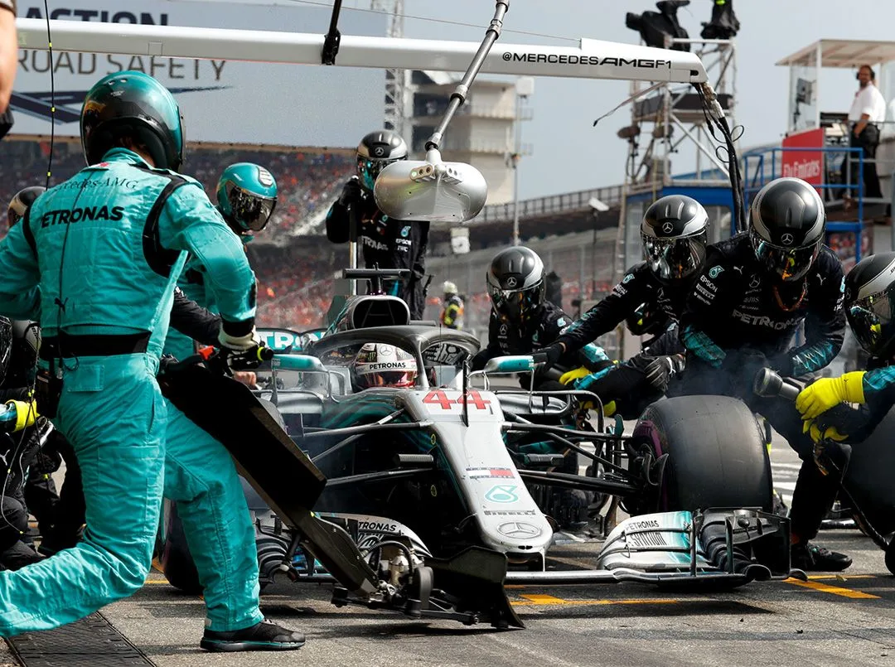

Ganamos posición, pero pagamos con desgaste.
Tomamos el hueco y funciona. La gente lo celebra como si fuera un gol.
Pero las llantas suben de temperatura y el auto empieza a deslizar más en las curvas largas.
En la radio, el equipo pregunta si queremos pelear ya o guardar lo último para el final.

Seguimos atacando y buscamos el momento legendario
Bajamos ritmo para asegurar el resultado